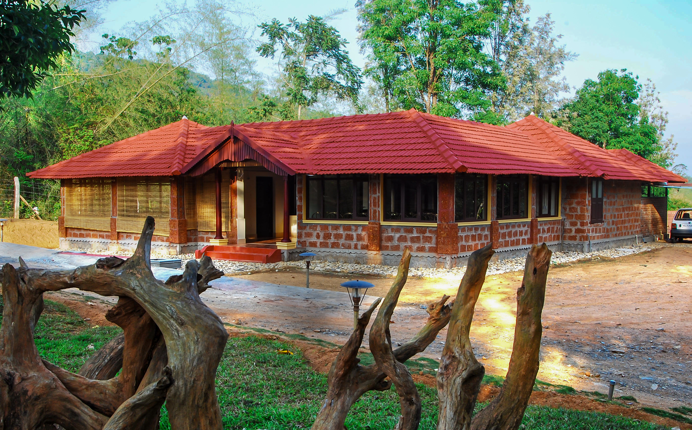
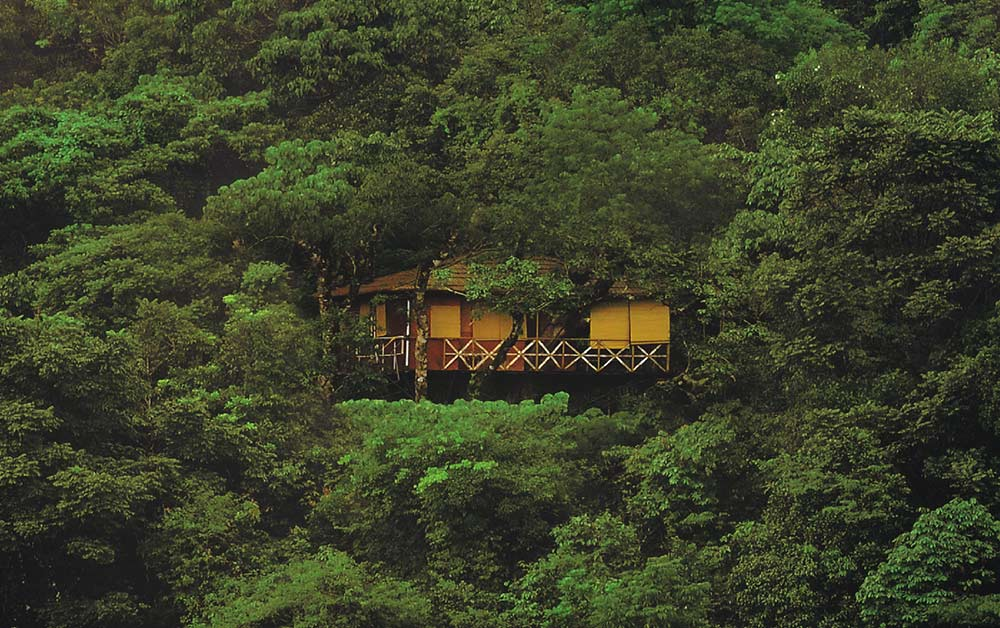

1 / 3

Caption one
2 / 3
Caption Two
3 / 3

Caption Three
3 / 3

Caption four
3 / 3
Caption five
Set in the beautiful green mountains of the Western Ghats, Wayanad is a popular tourist destination which is known for its natural beauty. The best time to explore the beauty of the place is during the winter season. Low humidity and cool weather makes this season perfect for sightseeing.
The winter season has brought the coldest days to Wayanad. With the new year, the district has been shivering in winter. It is reported that the tempe...
These months covers the winter and the beginning of the summer season. During the monsoons, the hill station receives the right amount of rainfall and the wet and humid weather might not be something tourists would be crazy for. So it is not always recommended except for those who wouldn't mind the rains only to be amidst the beautiful hill station covered with a green carpet of dense trees.
The period from December to February is the winter season in Wayanad. The winter season is considered to be the best time for tourist activities in Wayanad. The climate will be very pleasant and cool so make sure you carry the warm woolen clothes in your bag before heading to Wayanad.
Winters make the peak of tourist season in Wayanad and the temperatures fall to anywhere between 10-25°C. It is not too cold, neither warm. The weather is chilly and pleasant, mainly due to the mountains and forests around Wayanad. Most touristy and adventure things to do are available through this season.
The town is thronged by tourists as October to February marks the most active period of the year in Wayanad. Winter, hence, is ideally the best time to visit Wayanad.